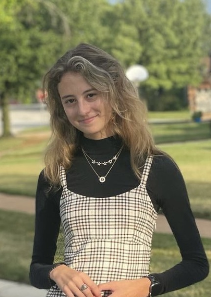

Senior: Elyssa Clanton
I can vividly remember sitting in my dorm freshman year and getting an email saying that gunshots had been fired through the Woods apartment windows. As a freshman, this was a very terrifying email to open my phone to. Living in Dolson, I had to listen to gunshots getting fired from behind my dorm almost every night.
In another occurrence, I was walking back from working on a group project at the UC with one of my friends, and we heard gunshots while we were walking. We had to duck and sprint to Public Safety so we knew we were safe. This was the first and only time something like this had happened to me, but it has been stuck in my mind since it happened.
Senior: JD Raycraft
During baseball practice, we had a person with a gun run right by the field. He was running from the scene where he had just used the gun. Everyone ran into the locker room and the cops were called, and they eventually cleared the scene. The practice was ultimately canceled due to the encounter. This was one of many gun violence situations that I’ve experienced during my time at Millikin.
Sophomore: Beth Portman

This year was the only time I have heard about gun violence on campus. It was crazy because I had talked to one of the guys a few days before it happened. I was sitting in my friend’s room when it happened and word got around quickly that students had been shot. Although it did not affect me personally, it really shook me. It makes me extra careful when walking around at night and I take care to observe my surroundings more than I used to.
Junior: Reed Pierson
During a birthday party at LSB (that was a Millikin student party only), there was a random person allowed in the party who had brought a gun. Because of the situation, the party was shut down really early. Now, most Millikin parties require Millikin IDs.